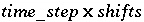

This keyword data block is used to specify the number of cells and the number of "shifts" for an advection simulation. Advection simulations are used to model one dimensional advective or "plug" flow with reactions. No dispersion or diffusion is simulated and no cells with immobile water are allowed. However, all chemical processes modeled by PHREEQC may be included in an advection simulation. The TRANSPORT data block may be used to model additional physical processes, such as dispersion, diffusion, and connected cells with immobile water.
Line 0: ADVECTION Line 1: -cells 5 Line 2: -shifts 25 Line 3: -time_step 3.15e7 # seconds = 1 yr. Line 4: -initial_time 1000 Line 5: -print_cells 1-3 5 Line 6: -print_frequency 5 Line 7: -punch_cells 2-5 Line 8: -punch_frequency 5 Line 9: -warnings false
ADVECTION is the keyword for the data block. No other data are input on the keyword line.
-cells--Identifier for number of cells in the advection simulation. Optionally, cells, or -c[ ells].
cells --Number of cells in the one dimensional column to be used in the advection simulation. Default is 0.
-shifts--Identifier for the number of shifts or time steps in the advection simulation. Optionally, shifts, or -sh[ ifts].
shifts --Number of times the solution in each cell will be shifted to the next higher numbered cell. Default is 0.
-time_step--Identifier for time step associated with each advective shift. The identifier is required if kinetic reactions ( KINETICS data blocks) are part of the advection simulation and optional for other advection simulations. If -time_step is defined, then the value for time printed to the selected-output file will be initial_time + advection_shift_number x time_step , if -time_step is not defined, the value of time printed to the selected-output file will be the advection shift number. Once -time_step is defined, the time step will be used for all subsequent advection simulations until it is redefined. Optionally, timest, -t[ imest], time_step, or -t[ ime_step].
time_step --The time in seconds associated with each advective shift. Kinetic reactions will be integrated for this period of time for each advective shift. Default is 0 s.
Line 4: -initial_time initial_time
-initial_time--Identifier to set the time at the beginning of an advection simulation. The identifier -initial_time has effect only if -time_step has been set in this or a previous ADVECTION data block. The identifier sets the initial value of the variable controlled by -time in SELECTED_OUTPUT data block. Optionally, initial_time or -i[ nitial_time].
initial_time --Time (seconds) at the beginning of the advection simulation. Default is the cumulative time including all preceding ADVECTION simulations for which -time_step has been defined and all preceding TRANSPORT simulations.
Line 5: -print_cells list of cell numbers
-print_cells--Identifier to select cells for which results will be written to the output file. If -print_cells is not included, results for all cells will be written to the output file. Once -print_cells is defined, the list of cells will be used for all subsequent advection simulations until the list is redefined. Optionally, print_cells or -pr[ int_cells]. Note the hyphen is required in -print to avoid a conflict with the keyword PRINT.
list of cell numbers --Printing to the output file will occur only for these cell numbers. The list of cell numbers must be delimited by spaces or tabs and may be continued on the succeeding line(s). A range of cell numbers may be included in the list in the form m-n , where m and n are positive integers, m is less than n , and the two numbers are separated by a hyphen without intervening spaces. Default 1- cells .
Line 6: -print_frequency print_modulus
-print_frequency--Identifier to select shifts for which results will be written to the output file. Once defined, the print frequency will be used for all subsequent advection simulations until it is redefined. Optionally, print_frequency, -print_f[ requency], output_frequency, -o[ utput_frequency].
print_modulus --Printing to the output file will occur after every print_modulus advection shifts. Default is 1.
Line 7: -punch_cells list of cell numbers
-punch_cells--Identifier to select cells for which results will be written to the selected-output file. If -punch_cells is not included, results for all cells will be written to the selected-output file. Once defined, the list of cells will be used for all subsequent advection simulations until the list is redefined. Optionally, punch, punch_cells, -pu[ nch_cells], selected_cells, or -selected_c[ ells].
list of cell numbers --Printing to the selected-output file will occur only for these cell numbers. The list of cell numbers must be delimited by spaces or tabs and may be continued on the succeeding line(s). A range of cell numbers may be included in the list in the form m-n , where m and n are positive integers, m is less than n , and the two numbers are separated by a hyphen without intervening spaces. Default 1- cells .
Line 8: -punch_frequency punch_modulus
-punch_frequency--Identifier to select shifts for which results will be written to the selected-output file. Once defined, the punch frequency will be used for all subsequent advection simulations until it is redefined. Optionally, punch_frequency, -punch_f[ requency], selected_output_frequency, -selected_o[ utput_frequency].
punch_modulus --Printing to the selected-output file will occur after every punch_modulus advection shifts. Default is 1.
Line 9: -warnings [( True or False )]
-warnings--Identifier enables or disables printing of warning messages for advection calculations. In some cases, advection calculations could produce many warnings that are not errors. Once it is determined that the warnings are not due to erroneous input, disabling the warning messages can avoid generating large output files. Optionally, warnings, warning, or -w[ arnings].
[( True or False )]--If value is true, warning messages are printed to the screen and the output file; if value is false, warning messages are not printed to the screen or the output file. The value set with -warnings is retained in all subsequent advection simulations until changed. Default is true, value at beginning of run is true.
The capabilities available through the ADVECTION data block are a simplified version of a more complete formulation of 1D advective-dispersive-reactive transport that is presented by Appelo and Postma (1993) and implemented in the TRANSPORT data block. Calculations using the ADVECTION keyword are sufficient for initial investigations, and in comparison to other problems that include dispersion, the calculations are fast. For many systems with limited data, the kinds of calculations available with ADVECTION are adequate and appropriate. The TRANSPORT data block allows modeling of the additional processes of diffusion, dispersion, and diffusion into stagnant zones. The transport capabilities of the ADVECTION keyword in PHREEQC version 2 are equivalent to the capabilities of the TRANSPORT keyword in PHREEQC version 1.
In the example data block given in this section, a column of five cells ( cells ) is modeled and 5 pore volumes of filling solution are moved through the column ( shifts / cells is 5). Unless kinetic reactions are modeled, no explicit definition of time is required, only the number of shifts. Also, no distance is explicitly specified for advection calculations, only the number of cells.
The -time_step identifier is required if kinetic reactions ( KINETICS data block) are defined for at least one cell in the column. If kinetic reactions are defined, then an integration is performed for each cell that has kinetic reactions for each advective shift. Kinetic reactions significantly increase the run time of a simulation because the integration of the rates of reaction imposes 1 to 6 (or possibly more) additional batch-reaction calculations for each cell that has kinetic reactions for each advective shift. The total time modeled in the example data block simulation is 25,000 seconds ( ).
By default, the composition of the solution, pure-phase assemblage, exchange assemblage, gas phase, solid-solution assemblage, surface assemblage, and kinetic reactants are printed for each cell for each shift. Use of -print_cells and -print_frequency, will limit the data written to the output file. The -print_cells identifier restricts printing in the output file to the specified cells; in the example data block, results for cells 1, 2, 3, and 5 are printed to the output file. The identifier -print_frequency restricts printing in the output file to those advection shifts that are evenly divisible by print_modulus . In the example data block, results are printed to the output file after each integer pore volume (5 shifts). Data written to the output file can be further limited with the keyword PRINT (see -reset false). The USER_PRINT data block can be used to calculate quantities to be printed to the output file.
If the SELECTED_OUTPUT data block has been defined (recommended), then data specified in the SELECTED_OUTPUT and USER_PUNCH data blocks are written to the selected-output file. Use of -punch_cells and -punch_frequency in the ADVECTION data block will limit what is written to the selected-output file. The -punch_cells identifier restricts printing to the selected-output file to the specified cells; in the example data block, results for cells 2, 3, 4, and 5 are printed to the selected-output file. The identifier -punch_frequency restricts printing to the selected-output file to those advection shifts that are evenly divisible by punch_modulus . In the example data block, results are printed to the selected-output file after each integer pore volume (5 shifts). All printing to the selected-output file can be switched on or off through the -selected_output identifier of the keyword PRINT.
Most of the information for advection calculations must be entered with other keywords. This advection calculation assumes that solutions with numbers 0 through 5 have been defined using the SOLUTION or SAVE data blocks. Solution 0 is the infilling solution and solutions 1 through 5 are the initial solutions in the cells of the column. Other reactants may be defined for each of the cells. Pure-phase assemblages may be defined with EQUILIBRIUM_PHASES or SAVE, with the number of the assemblage corresponding to the cell number. Likewise, an exchange assemblage, gas phase, solid-solution assemblage, or surface assemblage can be defined for each cell through EXCHANGE, GAS_PHASE, SOLID_SOLUTIONS, SURFACE, or SAVE data blocks, with the identifying number corresponding to the cell number. Note that ranges of numbers can be used (for example SOLUTION 1-5) to define multiple solutions, pure-phase assemblages, exchange assemblages, gas phases, solid-solution assemblages, or surface assemblages and that SAVE allows a range of numbers to be used.
The REACTION data block can be used to define a stoichiometric reaction that applies to a cell at each shift, with the reaction number corresponding to the cell number. This capability is not very useful because it represents only zero-order kinetics, the reaction rate is constant throughout the advection simulation. The KINETICS data block provides a better definition of time-varying reactions for individual cells.
The MIX keyword can be used with ADVECTION modeling to define simplistic dispersion or lateral inflow to the column. At each shift, solution 0 is moved to cell 1, any stoichiometric reaction or mixing for cell 1 is added, kinetic reactions are integrated while maintaining equilibrium with the contents of cell 1; solution 1 (before mixing and reaction) is moved to cell 2, reaction or mixing for cell 2 is added, kinetic reactions are integrated while maintaining equilibrium with the contents of cell 2; and so on until solution cells-1 is moved to cell cells . The moles of pure phases and kinetic reactants, and the compositions of the exchange assemblage, surface assemblage, and gas phase in each cell are updated with each shift, but only after mixing for the next cell has been accomplished.
EQUILIBRIUM_PHASES, EXCHANGE, GAS_PHASE, KINETICS, MIX, PRINT, REACTION, REACTION_TEMPERATURE, SAVE, SELECTED_OUTPUT, SOLID_SOLUTIONS, SOLUTION, SURFACE, TRANSPORT, USER_PRINT, and USER_PUNCH.